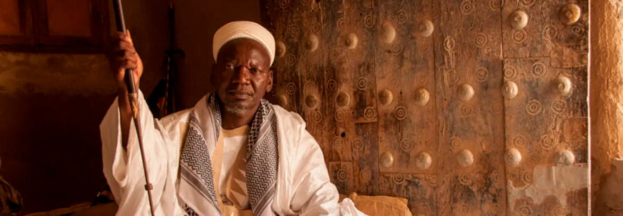

Hamdia Traoré’s “Des marabouts de Djenné” and Muslim Portraiture in Mali
The storied city of Djenné, a center of Islamic learning, study, and scholarship since the twelfth century, is the hometown of Bamako-based photographer Hamdia Traoré (b. 1992, Mali). The thirty portraits in Traore’s series Des marabouts de Djenné (Marabouts of Jenne) reflect his intimate connections to the city’s people and deep history. Learned and devout, marabouts teach in Djenné’s over 50 Qur’anic schools, offer spiritual guidance, and treat ailments through their knowledge of the Qur’an.
Made during a time of political and social upheaval in Mali, these portraits reflect enduring cultural resilience. Each image depicts a marabout seated with the tools of his practice—books, Qur’an boards, amulets, and prayer beads—framed by the architecture and atmosphere of Djenné. The consistent format underscores their collective identity, while individual poses and captions highlight personal roles and neighborhoods.
Traoré’s work will be shown alongside mid-20th-century black-and-white portraits of marabouts by Malian photographers Mamadou Cissé, Abdourahmane Sakaly, and Tijani Sitou. Drawn from the Archive of Malian Photography, these earlier images share visual parallels and deepen the historical context. Together, these images illuminate evolving perspectives on spiritual authority, identity, and visual representation in Mali.
This exhibition is developed in collaboration with the artist and professor Candace Keller, co-founder of the Archive of Malian Photography.
About the Artist
Hamdia Traoré is a documentary photographer based in Bamako, Mali. His photographs have been exhibited both in Mali and abroad. He has worked as a freelancer for the United States Embassy, the British Embassy, and the Consulate of Monaco in Mali, as well as for numerous international NGOs, such as SPANA, Tree Aid, Sightsavers, DevWorks, Vétérinaire Sans Frontières Belgium, and the Organization for the Prevention of Blindness, and for the photo agency Andolu Images. In 2015 he received the Documentary Award in the Architecture category from the Humanity Photo Awards of the China Folklore Photographic Association.